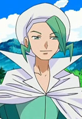

|
Atsunobu Hayashimizu |
- Full Metal Panic? Fumoffu
- Full Metal Panic! The Invisible Victory
|
Atsunobu Hayashimizu is the president of the Jindai High School's Council. He considers Sousuke's behavior a reasonable response to the kind of sitiuations. His behavior is calm and he is never seen angry. |
| |
Bruno |
|
Bruno is part of Kanto Elite Four. He specializes in Fighting-types Pokemon. Bruno has amazing physical power and agility in the anime, and appears capable of using them with almost superhuman expertise. |
 |
Simon Callum |
|
Simon Callum is the priest who presides over the village near Elias' house. Simon is a knid and gentle man of the church. He has great corcern for Chise's and Elias' health. |
|  |
Wallace |
- Pokemon Diamond and Pearl
|
Wallace is water type trainer. He is a Gym leader and Pokemon Coordinator. |
 |
Wilhelm Schultz |
|
Wilhem Schultz or Travas is Allison's childhood friend. He is a scholar who has the ability to memorize things instantly and skilled at firearms. He does has the sense for adventure like Allison. |


.jpg)